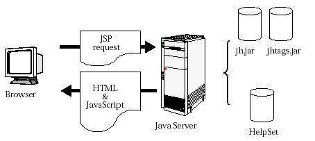

See also:
See also:
Server-based applications have the same need for online help as client based applications, but they require that the helpset runs in a web browser, as the applications do, and that it be accessed from a server. Version 1.0 of the JavaHelp software API provided a foundation for developing online help for server-based applications. However, the specification did not define standards for a JavaHelp bean or for a Java Server PagesTM (JSP) tag library to access helpset data. Version 2 of the JavaHelp software does define these standards and provides a tag library for server-based applications.
JSP enables web developers to develop dynamic web pages. JSP uses XML-like tags to encapsulate the logic that generates web content. JSP pages separate the page logic from its design and display, which prevents the overlapping of roles between web designers and programmers. Designers design the web pages and programmers add the logic and code to them.
For more information and tutorials on JavaServer Pages technology, see http://java.sun.com/products/jsp/docs.html.
By combining the JavaHelp software API with new JavaHelp JSP tag libraries, web developers are now able to provide help for server-based applications. The diagram below illustrates the architecture.
.
A browser initiates a JSP request. Examples of a JSP request are
displaying the help content in the helpset, the navigators, or the data for
a given navigator. Typically, the JSP request contains JavaBeansTM
components as well as JSP tag extensions. The JavaTM
server turns the request into a Java Servlet. The servlet access the appropriate
information from the helpset by using the classes in the JavaHelp library (jh.jar)
and the JavaHelp tag library (jhtags.jar) and returns HTML and possibly
JavaScript or dynamic HTML (DHTML) to the browser.
Access to helpset data on a server is accomplished through a combination of JavaBeans components specific to the JavaHelp system and JSP tag extensions. This section defines the standard JavaHelp JavaBeans and JSP tag extensions and scripting variables.
ServletHelpBroker is the JavaBean component that stores
help state information, such as the helpset in use, the current ID, the current
navigator and other pieces of help information. While it implements the javax.help.HelpBroker
interface, some of the methods are either not implemented or throw UnsupportedOperationExceptions
if called. The javax.help.HelpBroker methods that are not implemented
in this component are listed below:
|
Method
|
Result
|
|---|---|
initPresentation() |
No Operation |
setDisplayed(boolean) |
Ignored |
boolean isDisplayed() |
Always returns true |
enableHelpKey( |
No Operation |
enableHelp( |
No Operation |
enableHelpOnButton( |
No Operation |
One new method is added to ServletHelpBroker:
|
Method
|
Result
|
|---|---|
NavigatorView getCurrentNavigatorView() |
Returns the current navigator as a NavigatorView. |
The ServletHelpBroker is used in the JSP request with
a session scope. With this scope, the help broker remains in existence for the
duration of a session. The following code defines the help broker:
<jsp:useBean id="helpBroker" class="ServletHelpBroker"
scope="session" />
The ServletHelpBroker methods can be called in two ways:
<jh:validate helpBroker="<%= helpBroker %>" />
<FRAME SRC=
"<jsp:getProperty name="helpBroker" property="currentURL"
/>"
NAME="contentsFrame" SCROLLING="AUTO">
While you could retrieve all the helpset information required for displaying online help or documentation by using JavaBeans components and JSP scriptlets, you can instead avoid the appearance of programming and use a standard set of tag extensions in the JavaHelp tag library to invoke application functionality. The JavaHelp tag library is a common set of building blocks that perform the following functions:
The JavaHelp JSP tags are defined below:
|
Tag
|
Tag Class
TEI Class |
Description
|
Attributes
|
|---|---|---|---|
validate |
ValidateTag |
Validates a HelpBroker with various
parameters. Enables easy setup of a help broker with a new helpset. Also
enables merging of helpsets and setting the current ID. |
|
navigators |
NavigatorsTag NavigatorsTEI |
Returns NavigatorView information
for a given HelpBroker. |
|
tocItem |
TOCItemTag |
Provided with a TOCView, returns
TOCItem information. |
|
indexItem |
IndexItemTag |
Provided with an IndexView, returns
IndexItem information. |
|
searchItem |
SearchItemTag |
Provided with a SearchView, returns
SearchItem information. |
|
Unless otherwise specified, all attribute values are determined by expression.
Also, with the exception of the validate tag, the body of all tags
are JSP.
validate TagThe validate tag is designed to be used once in a JSP, as shown below:
<jh:validate helpBroker="<%= helpBroker %>" />
The preceding code verifies that a valid HelpBroker exists and then
loads the helpset that has been defined either in the validate tag
with the helpSetName attribute or as an HTTP POST request.
The navigator, tocItem, indexItem, and searchItem
tag extensions introduce a predefined set of scripting variables into a page.
These variables enable the calling JSP to control the presentation without having
to perform processing to determine the content. Unless otherwise specified,
each scripting variable creates a new variable, and the scope is set to NESTED.
NESTED variables are available to the calling JSP only within the body
of the defining tag.
The navigator variables are defined in the table below.
|
Variable
|
Data Type
|
Description
|
|---|---|---|
classname |
java.lang.String |
Name of the NavigatorView class. |
name |
java.lang.String |
Name of the view as defined in the helpset. |
tip |
java.lang.String |
Tooltip text for the view. |
iconURL |
java.lang.String |
URL for the icon if set with the imageID attribute
in the helpset. |
The navigator tag is used to return information about the current
navigator. In the illustration below the navigator tag is used to determine
the navigators that are used in the helpset and sets an HTML <img>
tag based on the navigator name.
<jh:navigators helpBroker="<%= helpBroker %>" >
<A HREF="navigator.jsp?nav=<%= name %>">
<IMG src="<%= iconURL!=""?
iconURL : "images/" + className +".gif" %>"
Alt="<%= tip %>"
BORDER=0></A>
</jh:navigators>The tocItem variables are defined in the table below.
|
Variable
|
Data Type
|
Description
|
|---|---|---|
name |
java.lang.String |
tocItem text as defined in the name attribute. |
target |
java.lang.String |
tocItem target as defined in the target attribute. |
parent |
java.lang.String |
Hex value identifying the parent node. |
parentID |
java.lang.String |
String identifying the parent node. |
node |
java.lang.String |
Hex value identifying this node. |
nodeID |
java.lang.String |
String identifying this node. |
iconURL |
java.lang.String |
URL for the icon if set with the imageID attribute in the
tocItem. |
contentURL |
java.lang.String |
URL for the content represented by this item. |
isCurrentNav |
java.lang.Boolean |
True if current navigator, false if not. |
The tocItem tag returns information about the TOC items defined in
a TOCView. In the sample code below, the TOCView returns tocItem
scripting variables that are added to the JavaScript tag tocTree.addTreeNode.
tocTree = new Tree("tocTree", 22, "ccccff", true, false);
<% TOCView curNav = (TOCView)helpBroker.getCurrentNavigatorView(); %>
<jh:tocItem helpBroker="<%= helpBroker %>" tocView="<%= curNav %>" >
tocTree.addTreeNode("<%= parentID %>",
"<%= nodeID %>",
"<%= iconURL!=""?iconURL:"null" %>",
"<%= name %>","<%= helpID %>",
"<%= contentURL!=""?contentURL:"null" %>",
"<%= expansionType%>" );
</jh:tocItem>
tocTree.drawTree();
tocTree.refreshTree();
<%
ID id = helpBroker.getCurrentID();
if (id != null) {
%>
tocTree.selectFromHelpID("<%= id.id%>");
<%
}
%>
The indexItem variables are defined in the table below.
|
Variable
|
Data Type
|
Description
|
|---|---|---|
name |
java.lang.String |
indexItem text as defined in the name attribute. |
target |
java.lang.String |
indexItem target as defined in the target attribute. |
parent |
java.lang.String |
Hex value identifying the parent node. |
parentID |
java.lang.String |
String identifying the parent node. |
node |
java.lang.String |
Hex value identifying this node. |
nodeID |
java.lang.String |
String identifying this node. |
iconURL |
java.lang.String |
URL for the icon if set with the imageID attribute in the
indexItem. |
contentURL |
java.lang.String |
URL for the content represented by this item. |
The indexItem tag returns information about the index item defined
in an IndexView. In the sample code below, the IndexView
returns indexItem scripting variables that are added to the JavaScript
tag addNode.
indexTree = new Tree("indexTree", 22, "ccccff", false, true);
<% IndexView curNav = (IndexView)helpBroker.getCurrentNavigatorView(); %>
<jh:indexItem indexView="<%= curNav %>" helpBroker="<%= helpBroker %>" >
indexTree.addTreeNode("<%= parentID %>",
"<%= nodeID %>", "null",
"<%= name %>","<%= helpID %>",
"<%= contentURL!=""?contentURL:"null" %>",
"<%= expansionType%>");
</jh:indexItem>
indexTree.drawTree();
indexTree.refreshTree();
<%
ID id = helpBroker.getCurrentID();
if (id != null) {
%>
indexTree.selectFromHelpID("<%= id.id%>");
<%
}
%>
The SearchItem variables are defined in the table below.
|
Variable
|
Data Type
|
Description
|
|---|---|---|
name |
java.lang.String |
Unique name of the searchItem. |
helpID |
java.lang.String |
String ID associated with this searchItem. |
confidence |
java.lang.String |
The quality of the hits as returned by the search engine. |
hits |
java.lang.String |
Number of hits. |
contentURL |
java.lang.String |
URL for the content represented by this item. |
hitBoundries |
java.lang.String |
A list of boundaries. Returns in the format of {begin, end},... |
The searchItem tag returns information about the search items defined
in a SearchView. In the sample code below, the SearchView returns
searchItem scripting variables that are added to the JavaScript tag
addNode.
searchList = new SearchList("searchList", 22, "ccccff");
<jh:searchTOCItem searchView="<%= curNav %>"
helpBroker="<%= helpBroker %>"
query="<%= query %>" >
searchList.addNode("<%= name %>",
"<%= confidence %>",
"<%= hits %>",
"<%= helpID %>",
"<%= contentURL %>" );
</jh:searchTOCItem>
searchList.drawList();
searchList.refreshList();
searchList.select(0);
See also: